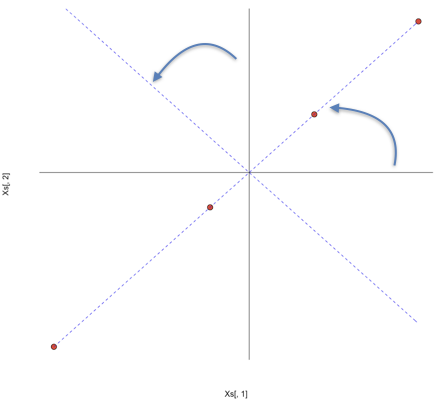
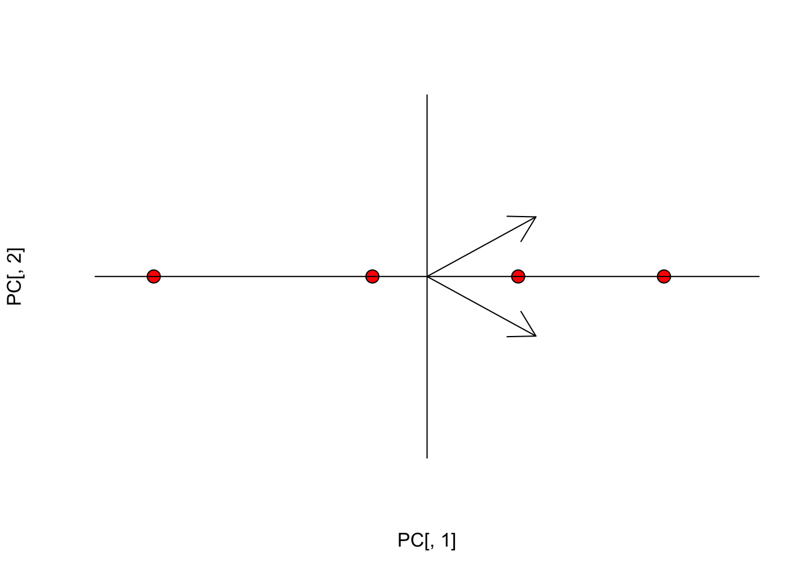
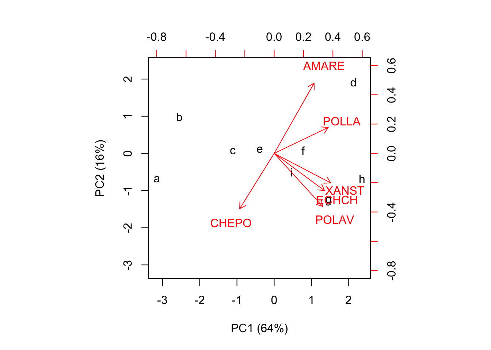
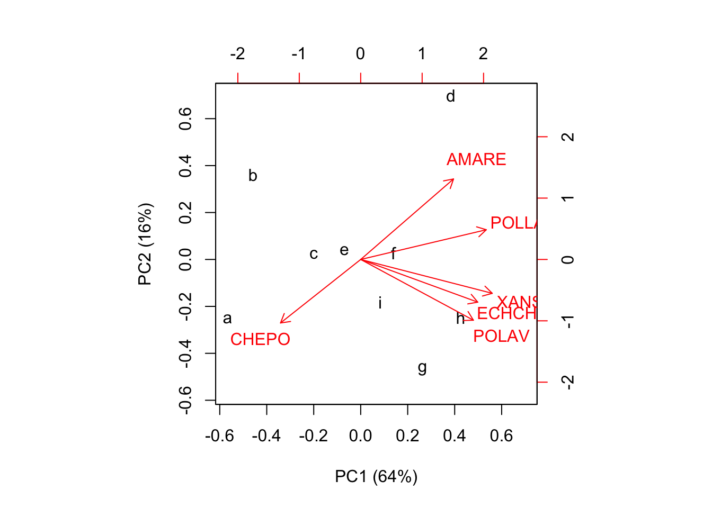
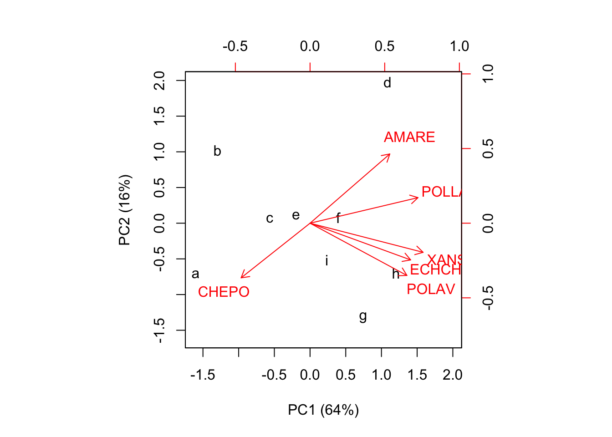

Gran parte della sperimentazione agronomica ha un approccio multivariato, nel senso che, indipendentemente dall’obiettivo e dal tipo di disegno, le prove prevedono il rilievo di un numero anche elevato di caratteri. Due esempi sono particolarmente calzanti: la valutazione della qualità produttiva nelle sperimentazioni varietali e la valutazione della flora infestante nelle prove malerbologiche. Infatti, sia la qualità della produzione che la flora infestante sono quantificate attraverso la rilevazione di molti caratteri (ad esempio contenuto in proteine, in amidi, valore nutritivo nel primo caso e il ricoprimento delle diverse specie infestanti nel secondo caso), difficilmente scindibili tra di loro.
L’approccio tradizionale di analisi dei dati in questo tipo di prove considera le singole variabili, impiegando metodiche quali l’ANOVA e i test di confronto multiplo. Senza voler sminuire l’importanza di questo tipo di approccio, è comunque evidente che con queste tecniche si vengono a perdere tutte le informazioni relative alle relazioni tra le variabili sperimentali e si perde la possibilità di fornire al lettore una sintesi generale dell’insieme dei risultati ottenuti.
Per questo motivo è talvolta utile impiegare metodiche di analisi multivariata, con le quali tutte le variabili rilevate vengono analizzate simultaneamente e contribuiscono alla valutazione dell’esperimento. In questa situazione, il primo problema che ci si trova ad affrontare è quello della riduzione della dimensionalità dei dati senza perdere informazioni. Ad esempio, se vogliamo studiare la composizione della flora infestante in una serie di appezzamenti in presenza di dieci specie vegetali, ogni appezzamento dovrebbe essere descritto attraverso dieci valori (le densità di ogni specie), il che complica notevolmente la presentazione grafica dei risultati. Per ovviare a ciò, sarebbe molto utile avere un metodo per ridurre le dieci variabili originali in un numero nettamente inferiore.
Per operare questa riduzione di dimensionalità possiamo sfruttare il fatto che, se esiste un certo grado di correlazione tra le variabili, allora parte dell’informazione veicolata dall’una è già contenuta nell’altra. Per comprendere meglio questo concetto possiamo fare un esempio banale: immaginiamo di avere una matrice \(X\) che rappresenta quattro individui, dei quali siano state rilevate due caratteristiche (X1 e X2), con X2 pari esattamente al doppio di X1. Questi quattro individui possono essere rappresentati graficamente nel piano cartesiano, come punti di cordinate X1 e X2.
X1 <- c(12, 15, 17, 19)
X2 <- c(24, 30, 34, 38)
X <- data.frame(X1, X2, row.names=letters[1:4])
print(X)
## X1 X2
## a 12 24
## b 15 30
## c 17 34
## d 19 38L’esempio è sciocco: è perfettamente chiaro che la seconda variabile (X2) è ridondante, dato che l’informazione che essa veicola è già contenuta in X1. Di conseguenza, X2 potrebbe essere eliminata senza perdita di informazione. L’eliminazione di una variabile è però un’operazione che non ci soddisfa, se non in questo caso del tutto inverosimile di correlazione perfetta tra le due variabili. Potremmo allora pensare ad un’approccio diverso, di tipo geometrico.
Innanzitutto vediamo che le le osservazioni hanno diversa media e diversa deviazione standard; di conseguenza, potremmo voler eseguire un’operazione di centratura (sottrarre da ogni osservazione la media della variabile a cui appartiene) o, eventualmente, di standardizzazione (dividere ogni dato centrato per la deviazione standard della variabile a cui appartiene).
Mentre la centratura è normale, la standardizzazione è, nel principio, opzionale, anche se viene normalmente eseguita quando le variabili hanno scale di misura molto diverse. Scegliere se centrare o standardizzare le osservazioni prima della PCA è rilevante, in quanto cambia l’interpretazione biologica dei risultati: i dati centrati sono espressi nella stessa unità di misura dei dati originali, come differenza rispetto alla media; i dati standardizzati sono sempre espressi come differenza rispetto alla media, ma in unità di deviazioni standard. Per motivi che saranno più chiari in seguito la PCA sui dati centrati è anche detta PCA sulla matrice delle varianze-covarianze, mentre la PCA sui dati standardizzati viene anche detta PCA sulla matrice delle correlazioni.
Xs <- scale(X, scale=T, center=T)[1:4,1:2]
Xs
## X1 X2
## a -1.2558275 -1.2558275
## b -0.2511655 -0.2511655
## c 0.4186092 0.4186092
## d 1.0883839 1.0883839Se standardizziamo le due variabili, ci accorgiamo che i quattro individui sono rappresentabili con quattro punti che giacciono sulla bisettrice del primo quadrante dello spazio euclideo a due dimensioni (hanno cioè le stesse coordinate).

Dal grafico precedente si nota che, se ruotassimo lo spazio euclideo di 45 gradi, facendo coincidere l’asse delle x con la bisettrice del primo quadrante, nello spazio ruotato gli individui avrebbero coordinate pari a 0 sull’asse delle y e, di conseguenza, questa seconda dimensione sarebbe totalmente ridondante. In questo modo, il problema potrebbe essere perfettamente posto in un’unica dimensione.
Senza andare nel dettaglio, per ruotare il sistema di riferimento di un angolo \(\alpha\) possiamo moltiplicare la matrice iniziale dei dati per una matrice di trasformazione A, così definita:
\[A=\left[\begin{array}{cc} \cos \alpha & - \sin \alpha \\ \sin \alpha & \cos \alpha \end{array} \right]\]
In questo esempio vediamo che \(\alpha\) è pari \(\pi/4\)). Più in generale, per ottenere la matrice di rotazione A basta calcolare gli autovettori della matrice di covarianza (PCA sui dati centrati) o di correlazione (PCA sui dati standardizzati) di \(X\).
Z <- cor(X)
Z
## X1 X2
## X1 1 1
## X2 1 1
eig <- eigen(Z)
eig
## eigen() decomposition
## $values
## [1] 2 0
##
## $vectors
## [,1] [,2]
## [1,] 0.7071068 -0.7071068
## [2,] 0.7071068 0.7071068
A <- eig$vectorsIn questo caso A corrisponde esattamente alle nostre aspettative, in quanto, ad esempio, il coseno di \(\pi/4\) è pari a \(\sqrt{2}/2 = 0.7071068\). Oltre agli autovettori, vengono anche forniti gli autovalori, dei quali parleremo in seguito.
Possiamo ora utilizzare la matrice di rotazione per calcolare le componenti principali:
\[PCs = \left[ \begin{array}{cc} -1.26 & -1.26 \\ -0.25 & -0.25 \\ 0.42 & 0.42 \\ 1.09 & 1.09 \end{array} \right] \times \left[ \begin{array}{cc} 0.707 & -0.707 \\ 0.707 & 0.707 \end{array} \right] = \left[ \begin{array}{cc} -1.76 & 0 \\ -0.36 & 0 \\ 0.59 & 0 \\ 1.54 & 0 \end{array} \right]\]
Con R:
PC <- Xs %*% A
print(round(PC, 3) )
## [,1] [,2]
## a -1.776 0
## b -0.355 0
## c 0.592 0
## d 1.539 0La moltiplicazione matriciale sopra esposta è, per chi non lo ricorda, un’operazione riga-colonna del tipo:
\[ -1.256 \times 0.707 + (-1.256 \times 0.707) = -1.776 \]
Insomma la moltiplicazione matriciale ci porta ad eseguire una cosiddetta ‘combinazione lineare’ delle due variabili iniziali, utilizzando come coefficienti i valori in ciascuna colonna di A. Con questa rotazione si ottengono due nuove variabili (dette componenti principali o PC). I punteggi nelle componenti principali (PC scores) sono le coordinate dei soggetti nel nuovo spazio ruotato. I vettori indicati in figura rappresentano le direzioni degli assi originali nel nuovo sistema di riferimento.
#Plot
plot(PC[,1], PC[,2], cex=1.5, pch=21, bg="red", axes=F,
xlim=c(-2,2), ylim=c(-2,2))
abline(h=0, lty=1)
abline(v=0, lty=1)
arrows(0, 0, eig$vectors[1,1], eig$vectors[1,2])
arrows(0, 0, eig$vectors[2,1], eig$vectors[2,2])
Vediamo che la seconda dimensione è totalmente ridondante e quindi la possiamo abbandonare, proiettando le osservazioni e i vettori in una sola dimensione.
Vediamo ora alcune caratteristiche della prima componente principale (PC1):
var(PC[,1])
## [1] 2
#Distances
dist(PC[,1])
## a b c
## b 1.4208067
## c 2.3680111 0.9472044
## d 3.3152156 1.8944089 0.9472044
dist(Xs)
## a b c
## b 1.4208067
## c 2.3680111 0.9472044
## d 3.3152156 1.8944089 0.9472044Insomma, la PC1 ha:
Ricordiamo che il prodotto scalare di due vettori non è altro che la somma dei prodotti delle componenti:
PC %*% t(A) #Su tutto lo spazio
## [,1] [,2]
## a -1.2558275 -1.2558275
## b -0.2511655 -0.2511655
## c 0.4186092 0.4186092
## d 1.0883839 1.0883839
PC[,1] %*% t(A[,1]) #Sullo spazio ridotto
## [,1] [,2]
## [1,] -1.2558275 -1.2558275
## [2,] -0.2511655 -0.2511655
## [3,] 0.4186092 0.4186092
## [4,] 1.0883839 1.0883839\[ \left[ \begin{array}{c} -1.78\\ -0.36\\ 0.59\\ 1.54\\ \end{array} \right] \times \left[ \begin{array}{cc} 0.707 & 0.707 \end{array} \right] = \left[ \begin{array}{cc} -1.78 \times 0.707 & -1.78 \times 0.707\\ -0.36\times 0.707 & -0.36\times 0.707\\ 0.59 \times 0.707 & 0.59\times 0.707\\ 1.54 \times 0.707 & 1.54\times 0.707\\ \end{array} \right] \]
La matrice degli autovettori è anche detta ‘rotation matrix’, mentre gli autovalori in questo caso sono pari a 2 e 0 e coincidono con le varianze delle variabili PC1 e PC2.
La PCA può anche essere eseguita attraverso un’operazione di decomposizione ai valori singolari (Singular Value Decomposition: SVD), come effettivamente avviene in alcuni package statistici (ad esempio la funzione prcomp o la funzione rda in R).
La SVD è molto utile per comprendere la costruzione dei biplot ed è stata descritta altrove; qui mostriamo solo l’equivalenza dei risultati:
p <- svd(Xs)
p
## $d
## [1] 2.449490e+00 1.798767e-16
##
## $u
## [,1] [,2]
## [1,] -0.7250524 0.6856174
## [2,] -0.1450105 -0.1605839
## [3,] 0.2416841 0.3403791
## [4,] 0.6283787 0.6231241
##
## $v
## [,1] [,2]
## [1,] 0.7071068 -0.7071068
## [2,] 0.7071068 0.7071068La matrice p$v coincide con la matrice di rotatione, mentre le componenti principali sono date da:
p$u %*% diag(p$d)
## [,1] [,2]
## [1,] -1.7760083 1.233266e-16
## [2,] -0.3552017 -2.888529e-17
## [3,] 0.5920028 6.122626e-17
## [4,] 1.5392072 1.120855e-16Se consideriamo i vettori riga delle componenti principali ed i vettori colonna della matrice di rotazione, i prodotti scalari di questi vettori restituiscono la matrice iniziale Xs:
PC %*% t(p$v)
## [,1] [,2]
## a -1.2558275 -1.2558275
## b -0.2511655 -0.2511655
## c 0.4186092 0.4186092
## d 1.0883839 1.0883839L’unica differenza tra i due metodi di calcolo sta nei valori singolari, che non sono uguali agli autovalori della PCA. Le relazioni sono le seguenti:
Date n variabili qualunque è possibile calcolare altrettante componenti principali, operando una combinazione lineare tramite i coefficienti ottenuti dalla matrice degli n autovettori della matrice di correlazione delle variabili originali. Le componenti principali così calcolate non sono correlate, hanno varianza pari agli autovalori della matrice di correlazione e conservano tutta la variabilità iniziale dei dati. Inoltre (cosa più importante) la prima PC estrae il massimo possibile della variabilità iniziale dei dati, la seconda PC estrae il massimo della variabilità rimanente e così via. In questo modo è possibile ridurre la dimensionalità dei dati prendendo le prime m PC (con m < n), che sono in grado di conservare una elevata percentuale dell’informazione (variabilità) inizialmente contenuta nei dati sperimentali originali.
L’esempio precedente è estremo nel senso che le due variabili iniziali erano perfettamente correlate. Consideriamo invece una prova di confronto tra erbicidi per il diserbo chimico della barbabietola da zucchero. L’efficacia di ogni p.a. è stata misurata attraverso la percentuale di ricoprimento di sei specie infestanti (Polygonum lapathyfolium, Chenopodium polyspermum, Echinochloa crus-galli, Amaranthus retroflexus, Xanthium strumarium e Polygonum aviculare), identificate attraverso il loro codice BAYER.
L’obiettivo è quello di ordinare le tesi erbicide, in modo che quelle più simili per spettro d’azione siano più vicine di quelle caratterizzate da spettro d’azione diverso.
Si vuole esprimere un giudizio di merito tra le diverse soluzioni erbicide. I dati osservati sono riportati di seguito:
rm(list=ls())
weedPop <- structure(data.frame(
POLLA = c(0.1, 0.1, 7, 18, 5, 11, 8, 18, 6),
CHEPO = c(33L, 3L, 19L, 3L, 7L, 9L, 13L, 5L, 6L),
ECHCG = c(11L, 3L, 19L, 28L, 28L, 33L, 33L, 33L, 38L),
AMARE = c(0L, 0L, 4L, 19L, 3L, 7L, 6L, 4L, 3L),
XANST = c(0.1, 0.1, 7, 12, 10, 10, 15, 19, 10),
POLAV = c(0.1, 0, 1, 6, 1, 6, 15, 12, 6)),
.Names = c("POLLA", "CHEPO", "ECHCH", "AMARE",
"XANST", "POLAV")
)
dimnames(weedPop)[[1]] <- LETTERS[1:9]
weedPop
## POLLA CHEPO ECHCH AMARE XANST POLAV
## A 0.1 33 11 0 0.1 0.1
## B 0.1 3 3 0 0.1 0.0
## C 7.0 19 19 4 7.0 1.0
## D 18.0 3 28 19 12.0 6.0
## E 5.0 7 28 3 10.0 1.0
## F 11.0 9 33 7 10.0 6.0
## G 8.0 13 33 6 15.0 15.0
## H 18.0 5 33 4 19.0 12.0
## I 6.0 6 38 3 10.0 6.0Invece che considerare le singole infestanti, tentiamo un’analisi globale dell’intera infestazione. E’ evidente però che questo dataset è difficile da gestire e ridurre la sua dimensionalità omettendo l’informazione ‘ridondante’ sarebbe molto utile. La ridondanza sta nel fatto che le variabili sono correlate tra loro e quindi ognuna veicola anche parte dell’informazione relativa alle altre. In termini biologici, è chiaro ad esempio che un diserbante agisce in modo simile su specie affini da un punto di vista botanico:
print( cor(weedPop), digits=3)
## POLLA CHEPO ECHCH AMARE XANST POLAV
## POLLA 1.000 -0.471 0.631 0.750 0.824 0.615
## CHEPO -0.471 1.000 -0.360 -0.377 -0.460 -0.287
## ECHCH 0.631 -0.360 1.000 0.396 0.847 0.694
## AMARE 0.750 -0.377 0.396 1.000 0.446 0.318
## XANST 0.824 -0.460 0.847 0.446 1.000 0.844
## POLAV 0.615 -0.287 0.694 0.318 0.844 1.000Decidiamo quindi di eseguire la PCA, per provare a ridurre notevolmente la dimensionalità del problema.
Nella matrice dei dati, alcune variabili hanno varianza più alta di altre:
apply(weedPop, 2, var)
## POLLA CHEPO ECHCH AMARE XANST POLAV
## 43.45750 95.11111 136.86111 32.61111 38.73528 29.06500Per evitare che le variabili a maggior varianza pesino più delle altre sull’ordinamento dei diserbanti, operiamo sui dati standardizzati:
weedPopS <- scale(weedPop, scale=T)Bisogna ricordare che nella matrice standardizzata i valori negativi indicano un’infestazione al disotto della media, mentre quelli positivi indicano un’infestazione sopra la media. Le infestazioni sono espresse in unità di deviazioni standard, quindi un valore pari a +1 indica che siamo una deviazione standard sopra la media (indipendentemente da quanto era la deviazione standard originale).
Da un punto di vista pratico, se vogliamo lavorare con la matrice originale standardizzata calcoleremo gli autovalori/autovettori della matrice di correlazione, se vogliamo invece lavorare sulla matrice originale centrata, allora calcoleremo gli autovalori/autovettori della matrice delle varianze-covarianze.
Gli autovettori ed autovalori della matrice di correlazione sono:
pca <- eigen(cor(weedPop))
print(pca$values, digits=3)
## [1] 3.8580 0.9366 0.6750 0.3039 0.1920 0.0344
A <- pca$vectors
row.names(A) <- colnames(weedPop)
print(A, digits=3)
## [,1] [,2] [,3] [,4] [,5] [,6]
## POLLA 0.460 0.221 -0.24985 0.1658 0.641 -0.4884
## CHEPO -0.294 -0.473 -0.82077 -0.0553 0.106 0.0492
## ECHCH 0.429 -0.318 0.04360 -0.7830 -0.178 -0.2617
## AMARE 0.340 0.599 -0.50839 -0.0570 -0.460 0.2285
## XANST 0.482 -0.252 0.05955 0.0369 0.338 0.7651
## POLAV 0.413 -0.452 -0.00164 0.5931 -0.470 -0.2300Utilizziamo quindi la matrice di rotazione (A) per calcolare le componenti principali (PC scores):
PCscores <- weedPopS %*% A
row.names(PCscores) <- letters[1:9]
print(PCscores, digits=3)
## [,1] [,2] [,3] [,4] [,5] [,6]
## a -3.149 -0.6934 -1.2399 0.0492 0.0360 -0.0871
## b -2.546 0.9861 1.2551 0.7437 -0.1589 -0.0553
## c -1.111 0.0642 -0.5837 -0.1334 0.4072 0.1219
## d 2.131 1.9161 -0.9096 0.0616 -0.2061 0.0262
## e -0.387 0.1079 0.6533 -0.6903 0.1889 0.3369
## f 0.776 0.0767 -0.0814 -0.3752 -0.0397 -0.2627
## g 1.463 -1.2798 -0.1703 0.5564 -0.7200 0.1704
## h 2.362 -0.6767 0.3413 0.5668 0.8051 -0.0711
## i 0.462 -0.5010 0.7353 -0.7787 -0.3124 -0.1793
print( apply(PCscores, 2, var), digits=3)
## [1] 3.8580 0.9366 0.6750 0.3039 0.1920 0.0344A questo punto cerchiamo di capire quante componenti principali selezionare. Per questo, possiamo usare il ‘Kaiser criterion’ secondo il quale si possono escludere tutte le PC varianze inferiori ad 1 (quindi con variabilità inferiore a quella di una qualunque variabile standardizzata). In questo caso possiamo scegliere le prime due PC (anche se la seconda ha una varianza leggermente inferiore all’unità), che spiegano circa l’80% della variabilità delle sei variabili originali standardizzate. Insomma, la qualità di rappresentazione della nostra analisi è buona.
#Determinazione delle percentuali di varianza spiegata
#da ogni PC
print( pca$values/sum(pca$values)*100, digits=3)
## [1] 64.300 15.611 11.250 5.066 3.201 0.573Consideriamo ora i vettori riga (uno per ogni soggetto) della matrice delle PC e i vettori riga (uno per ogni specie) della matrice di rotazione; i prodotti scalari restituiscono la matrice originale standardizzata:
print( PCscores[,1] %*% t(A[,1]), digits=3)
## POLLA CHEPO ECHCH AMARE XANST POLAV
## [1,] -1.449 0.925 -1.350 -1.071 -1.517 -1.300
## [2,] -1.172 0.748 -1.092 -0.866 -1.227 -1.051
## [3,] -0.511 0.326 -0.477 -0.378 -0.536 -0.459
## [4,] 0.980 -0.626 0.914 0.725 1.027 0.880
## [5,] -0.178 0.114 -0.166 -0.132 -0.186 -0.160
## [6,] 0.357 -0.228 0.333 0.264 0.374 0.320
## [7,] 0.673 -0.430 0.627 0.497 0.705 0.604
## [8,] 1.087 -0.694 1.013 0.803 1.138 0.975
## [9,] 0.213 -0.136 0.198 0.157 0.223 0.191Se consideriamo le prime due colonne di entrambe le matrici, otteniamo la miglior approssimazione possibile della matrice iniziale, in due dimensioni.
print(PCscores[,1:2] %*% t(pca$vectors[,1:2]), digits=3)
## [,1] [,2] [,3] [,4] [,5] [,6]
## a -1.602 1.2527 -1.130 -1.486 -1.343 -0.9865
## b -0.953 0.2819 -1.405 -0.275 -1.475 -1.4971
## c -0.497 0.2961 -0.497 -0.339 -0.552 -0.4878
## d 1.404 -1.5316 0.305 1.872 0.544 0.0134
## e -0.154 0.0627 -0.200 -0.067 -0.214 -0.2085
## f 0.374 -0.2641 0.308 0.310 0.354 0.2856
## g 0.390 0.1753 1.034 -0.269 1.027 1.1824
## h 0.937 -0.3741 1.228 0.398 1.309 1.2812
## i 0.102 0.1010 0.357 -0.143 0.349 0.4174Le analisi eseguite fino ad ora ci hanno consentito di ridurre le sei variabili iniziali a due, che conservano la gran parte (80%) dell’informazione contenuta nei dati orginali. Queste due componenti principali possono essere utilizzate in luogo delle sei variabili iniziali in successive elaborazioni statistiche (analisi cluster o di regressione, ad esempio).
Tuttavia, il ruolo delle PC non si esaurisce qui, ma esse possono anche essere utilizzate per ordinare le osservazioni sperimentali (nel nostro caso i diversi diserbanti) e capire quali variabili provocano un maggior grado di discriminazione.
Innanzitutto la matrice di rotazione descrive quanto ogni componente principale è correlata con ogni specie infestante: valori alti positivi indicano correlazione positiva, valori alti negativi indicano correlazione negativa, valori vicini allo zero indicano bassa correlazione. Ad esempio, la prima componente principale è positvamente correlata con XANST, POLLA, ECHCG e POLAV, negativamente con CHEPO.
Osservando i punteggi sulle PC e la matrice di rotazione, possiamo avere un’idea dello spettro d’azione dei diversi diserbanti. Ad esempio, il trattamento A ha valori molto bassi e negativi sulla PC1 e quindi dovrebbe essere caratterizzato da una bassa presenza delle infestanti caratterizzate da punteggi positivi sulle prime due PCA (XANST, POLLA, ECHCG, AMARE e POLAV) e da alta presenza delle infestanti caratterizzate da punteggi negativi (CHEPO). Viceversa, il trattamento H ha punteggio alto positivo sulla PC1 e basso negativo sulla PC2 e sarà quindi caratterizzato da un elevata presenza di infestanti con punteggi di simile segno, come XANST. Considerazioni simili possono essere fatte pensando alla regola del prodotto scalare, enunciata in precedenza.
Più facilmente, la PCA può essere utilizzata per produrre un tipo di grafico noto come ‘biplot’, che mostra due serie di dati contemporaneamente, cioè le componenti principali per i diserbanti e la matrice di rotazione per le infestanti.
Sono possibili diversi biplot, a seconda della scalatura delle componenti principali.
Per l’ordinamento, possiamo utilizzare la matrice dei PC scores e quella di rotazione. In questo caso, secondo la nomenclatura in voga in alcuni package di analisi vegetazionale, stiamo operando con il cosiddetto row-scaling (scaling 1 in VEGAN), in quanto le componenti principali conservano le relazioni di distanza esistenti tra i soggetti (appunto le righe) del dataset originale (standardizzato, nella fattispecie).
print( dist(weedPopS), digits=4)
## A B C D E F G H
## B 3.151
## C 2.318 2.722
## D 5.905 5.282 3.804
## E 3.550 2.851 1.569 3.588
## F 4.190 3.868 2.054 2.492 1.550
## G 4.863 4.862 3.217 3.426 2.904 1.959
## H 5.808 5.353 3.763 3.103 3.225 2.214 1.954
## I 4.219 3.727 2.358 3.477 1.274 1.159 2.121 2.621
print( dist(PCscores), digits=4)
## a b c d e f g h
## b 3.151
## c 2.318 2.722
## d 5.905 5.282 3.804
## e 3.550 2.851 1.569 3.588
## f 4.190 3.868 2.054 2.492 1.550
## g 4.863 4.862 3.217 3.426 2.904 1.959
## h 5.808 5.353 3.763 3.103 3.225 2.214 1.954
## i 4.219 3.727 2.358 3.477 1.274 1.159 2.121 2.621Nel caso in cui venga creato utilizzando le componenti principali e la matrice di rotazione, il biplot si chiama ‘distance biplot’ in quanto le distanze tra i markers dei trattamenti sono la miglior approssimazione delle loro distanze euclidee (standardizzate, in questo caso) nel dataset originale.
biplot(PCscores[,1:2], A[,1:2], xlab="PC1 (64%)",
ylab="PC2 (16%)")
Nel biplot osserviamo che tesi con infestazioni simili giacciono vicine sul piano, mentre quelle con infestazioni molto diverse giacciono lontane. Individuiamo ad esempio che i trattamenti C, E, F ed I formano un raggruppamento molto simile, con valori bassi sia sulla prima che sulla seconda componente principale, mentre A e B hanno entrambi valori bassi sulla prima componente principale, ma differiscono perchè hanno valori opposti sulla seconda componente principale. D è invece un caso isolato, abbastanza diverso da tutti gli altri trattamenti.
Per ottenere una buona approssimazione del livello di infestazione con ogni trattamento, possiamo immaginare il prodotto scalare di ogni vettore-località per ogni vettore specie. Questo prodotto è visualizzabile come lunghezza della proiezione di un certo marker di trattamento, sul vettore di una certa specie infestante (Figura sottostante). Ad esempio, il trattamento A ha mostrato valori molto alti su CHEPO e molto bassi (negativi) su AMARE (la proiezione giace nella direzione negativa del vettore AMARE). Allo stesso modo, A ha mostrato valori molto bassi (negativi, cioè sotto la media; ricordiamo che il dataset è standardizzato) su tutte le altre infestanti. Si può riscontrare che, per ECHCG, il valore osservato è 11, che non è basso in assoluto, ma è comunque sotto la media.
Il ‘distance biplot’ fornisce informazioni corrette sulla distanza tra i soggetti e sulle relazioni tra soggetti e variabili, ma, per sua natura, non fornisce informazioni sulla relazione tra variabili. Per questo, è necessario un altro tipo di biplot.
Per ottenere informazioni più dettagliate sulle variabili sperimentali (sulle specie infestanti, quindi) dobbiamo procedere ad una scalatura delle componenti principali e della matrice di rotazione. Questo aspetto è stato già trattato altrove in modo dettagliato, ricordiamo solo che, in molti programmi di analisi vegetazionale si parla di column-scaling (scaling 2 in VEGAN), in quanto questo scaling conserva le relazioni tra colonne (correlazioni) esistenti nel dataset originale.
La scalatura più comune consiste nel prendere le componenti principali (che hanno varianze pari al rispettivo autovalore) e ‘scalarle’ in modo che abbiano lunghezze unitarie (cioè somme di quadrati delle co-ordinate unitarie). Per far ciò, è sufficiente dividere ogni dato per la lunghezza (norma) della PC di cui fa parte:
norme <- sqrt(apply(PCscores^2, 2, sum))
PCscores2 <- PCscores %*% diag(1/norme)
print( PCscores2, digits=2)
## [,1] [,2] [,3] [,4] [,5] [,6]
## a -0.567 -0.253 -0.534 0.032 0.029 -0.17
## b -0.458 0.360 0.540 0.477 -0.128 -0.11
## c -0.200 0.023 -0.251 -0.086 0.329 0.23
## d 0.384 0.700 -0.391 0.040 -0.166 0.05
## e -0.070 0.039 0.281 -0.443 0.152 0.64
## f 0.140 0.028 -0.035 -0.241 -0.032 -0.50
## g 0.263 -0.468 -0.073 0.357 -0.581 0.32
## h 0.425 -0.247 0.147 0.363 0.650 -0.14
## i 0.083 -0.183 0.316 -0.499 -0.252 -0.34Nel contempo, possiamo scalare la matrice di rotazione (autovettori) moltiplicando ogni dato per la lunghezza (norma) della componente principale di cui fa parte:
rotation2 <- pca$vectors %*% diag(norme)
dimnames(rotation2)[1] <- dimnames(weedPop)[2]
print(rotation2, digits=3)
## [,1] [,2] [,3] [,4] [,5] [,6]
## POLLA 2.56 0.605 -0.58061 0.2585 0.795 -0.2561
## CHEPO -1.63 -1.294 -1.90734 -0.0862 0.131 0.0258
## ECHCH 2.38 -0.870 0.10132 -1.2210 -0.221 -0.1372
## AMARE 1.89 1.640 -1.18142 -0.0888 -0.570 0.1198
## XANST 2.68 -0.690 0.13838 0.0575 0.419 0.4012
## POLAV 2.29 -1.238 -0.00382 0.9249 -0.582 -0.1206Questa seconda matrice è proporzionale alla matrice di correlazione delle variabili originali. Infatti:
print( (rotation2 %*% t(rotation2)) / 8, digits=3)
## POLLA CHEPO ECHCH AMARE XANST POLAV
## POLLA 1.000 -0.471 0.631 0.750 0.824 0.615
## CHEPO -0.471 1.000 -0.360 -0.377 -0.460 -0.287
## ECHCH 0.631 -0.360 1.000 0.396 0.847 0.694
## AMARE 0.750 -0.377 0.396 1.000 0.446 0.318
## XANST 0.824 -0.460 0.847 0.446 1.000 0.844
## POLAV 0.615 -0.287 0.694 0.318 0.844 1.000
print( cor(weedPop), digits=3)
## POLLA CHEPO ECHCH AMARE XANST POLAV
## POLLA 1.000 -0.471 0.631 0.750 0.824 0.615
## CHEPO -0.471 1.000 -0.360 -0.377 -0.460 -0.287
## ECHCH 0.631 -0.360 1.000 0.396 0.847 0.694
## AMARE 0.750 -0.377 0.396 1.000 0.446 0.318
## XANST 0.824 -0.460 0.847 0.446 1.000 0.844
## POLAV 0.615 -0.287 0.694 0.318 0.844 1.000Le due matrici anzidette sono comunque in gradi di ricostruire la matrice iniziale WeedPopS per moltiplicazione
print( PCscores2 %*% t(rotation2), digits=3)
## POLLA CHEPO ECHCH AMARE XANST POLAV
## a -1.2186 2.267 -1.206 -0.895 -1.469 -0.952
## b -1.2186 -0.809 -1.890 -0.895 -1.469 -0.971
## c -0.1719 0.832 -0.522 -0.195 -0.361 -0.785
## d 1.4967 -0.809 0.247 2.432 0.443 0.142
## e -0.4753 -0.399 0.247 -0.370 0.121 -0.785
## f 0.4349 -0.194 0.674 0.331 0.121 0.142
## g -0.0202 0.216 0.674 0.156 0.925 1.812
## h 1.4967 -0.604 0.674 -0.195 1.567 1.255
## i -0.3236 -0.501 1.102 -0.370 0.121 0.142Utilizzando queste due matrici per il biplot, otteniamo il cosiddetto ‘correlation biplot’, simila al precedente, ma non del tutto uguale.
biplot(PCscores2[,1:2], rotation2[,1:2], xlab="PC1 (64%)"
, ylab="PC2 (16%)")
In questo biplot, l’angolo tra i vettori rappresenta la correlazione tra le variabili originali, mentre la distanza tra i markers non è una buona approssimazione della distanza euclidea tra le osservazioni originali.
Nella PCA, in molti casi, le componenti principali sono scalate in modo da avere varianze unitarie, piuttosto che norme unitarie. Per far ciò, invece che dividere per la norma della PC corrispondente, si divide per la deviazione standard della componente principale corrispondente (equivalente alla radice quadrata dell’autovalore corrispondente). In questo modo si ottengono i cosidetti factor scores:
devSt <- apply(PCscores, 2, sd)
factorScores <- PCscores %*% diag(1/devSt)
print(factorScores, digits=3)
## [,1] [,2] [,3] [,4] [,5] [,6]
## a -1.603 -0.7165 -1.5091 0.0892 0.0821 -0.470
## b -1.296 1.0189 1.5276 1.3489 -0.3627 -0.298
## c -0.566 0.0663 -0.7105 -0.2420 0.9292 0.657
## d 1.085 1.9798 -1.1071 0.1118 -0.4704 0.142
## e -0.197 0.1114 0.7951 -1.2521 0.4310 1.817
## f 0.395 0.0793 -0.0991 -0.6806 -0.0906 -1.417
## g 0.745 -1.3224 -0.2072 1.0092 -1.6431 0.919
## h 1.203 -0.6992 0.4153 1.0281 1.8372 -0.384
## i 0.235 -0.5177 0.8949 -1.4124 -0.7128 -0.967
#PCscores2*sqrt(8)Nel contempo, possiamo scalare la matrice di rotazione (autovettori) moltiplicando ogni dato di ogni colonna per la radice quadrata del rispettivo autovalore, ottenendo i cosidetti factor loadings:
loadings <- pca$vectors %*% diag(devSt)
dimnames(loadings)[1] <- dimnames(weedPop)[2]
print(loadings, digits=3)
## [,1] [,2] [,3] [,4] [,5] [,6]
## POLLA 0.904 0.214 -0.20528 0.0914 0.2809 -0.09055
## CHEPO -0.577 -0.457 -0.67435 -0.0305 0.0464 0.00913
## ECHCH 0.842 -0.307 0.03582 -0.4317 -0.0780 -0.04852
## AMARE 0.668 0.580 -0.41769 -0.0314 -0.2016 0.04236
## XANST 0.946 -0.244 0.04892 0.0203 0.1480 0.14185
## POLAV 0.811 -0.438 -0.00135 0.3270 -0.2058 -0.04265
#rotation2/sqrt(8)I loadings esprimono le correlazioni tra le componenti principali e ognuna delle variabili originali:
print(cor(weedPop, PCscores), digits=2)
## [,1] [,2] [,3] [,4] [,5] [,6]
## POLLA 0.90 0.21 -0.2053 0.091 0.281 -0.0905
## CHEPO -0.58 -0.46 -0.6743 -0.030 0.046 0.0091
## ECHCH 0.84 -0.31 0.0358 -0.432 -0.078 -0.0485
## AMARE 0.67 0.58 -0.4177 -0.031 -0.202 0.0424
## XANST 0.95 -0.24 0.0489 0.020 0.148 0.1418
## POLAV 0.81 -0.44 -0.0014 0.327 -0.206 -0.0426Inoltre, se guardiamo le somme dei prodotti degli elementi in ogni riga, possiamo notare che questa è uguale alla correlazione tra le variabili originali.
print( loadings %*% t(loadings), digits=3)
## POLLA CHEPO ECHCH AMARE XANST POLAV
## POLLA 1.000 -0.471 0.631 0.750 0.824 0.615
## CHEPO -0.471 1.000 -0.360 -0.377 -0.460 -0.287
## ECHCH 0.631 -0.360 1.000 0.396 0.847 0.694
## AMARE 0.750 -0.377 0.396 1.000 0.446 0.318
## XANST 0.824 -0.460 0.847 0.446 1.000 0.844
## POLAV 0.615 -0.287 0.694 0.318 0.844 1.000Ovviamente, anche in questo caso vale la regola che il prodotto tra factor scores e factor loadings ricostruisce la matrice iniziale standardizzata:
print(factorScores %*% t(loadings), digits=3)
## POLLA CHEPO ECHCH AMARE XANST POLAV
## a -1.2186 2.267 -1.206 -0.895 -1.469 -0.952
## b -1.2186 -0.809 -1.890 -0.895 -1.469 -0.971
## c -0.1719 0.832 -0.522 -0.195 -0.361 -0.785
## d 1.4967 -0.809 0.247 2.432 0.443 0.142
## e -0.4753 -0.399 0.247 -0.370 0.121 -0.785
## f 0.4349 -0.194 0.674 0.331 0.121 0.142
## g -0.0202 0.216 0.674 0.156 0.925 1.812
## h 1.4967 -0.604 0.674 -0.195 1.567 1.255
## i -0.3236 -0.501 1.102 -0.370 0.121 0.142Il biplot costruito utilizzando scores e loadings è molto simila al correlation biplot, precedentemente illustrato.
biplot(factorScores[,1:2], loadings[,1:2],
xlab="PC1 (64%)", ylab="PC2 (16%)")
Concludiamo ricordando due aspetti:
La PCA con R è molto semplice, anche se esistono numerosi funzioni, tra le quali non è sempre facile scegliere. Ne indicheremo alcune.
Le funzioni più comuni in R per la PCA sono princomp() e prcomp(). Hanno la stessa sintassi e bisogna indicare l’opzione scale=T (cor=T, in princomp) oppure scale=F (cor=F, in princomp), a seconda che vogliamo calcolare la PCA sui dati standardizzati o solo centrati. Nel caso di prcomp(), evidenziamo il fatto che, nell’output, R non mostra gli autovalori, bensì le loro radici quadrate, corrispondenti alle deviazioni standard delle componenti principali.
Nel caso di princomp(), bisogna invece osservare che le componenti principali sono ottenute standardizzando la matrice iniziale con la deviazione standard della popolazione e non con quella del campione. Ricordiamo che la differenza sta nel fatto che la devianza viene divisa per il numero dei dati e non per il numero dei gradi di libertà.
#prcomp()
pcaAnalysis<-prcomp(weedPop, scale=TRUE)
summary(pcaAnalysis)
print( pcaAnalysis$x, digits=3) #PCA scores
print(pcaAnalysis$rotation, digits=3) #rotation
#princomp()
pcaAnalysis2 <- princomp(weedPop, cor=T)
print(pcaAnalysis2, digits=3)
print(pcaAnalysis2$scores, digits=3)
print(pcaAnalysis2$loadings, digits=3)
#Standardizzazione con la deviazione standard della popolazione
weedPopC <- scale(weedPop, scale=F)
stat <- sqrt(apply(weedPop, 2, var)*(8/9))
weedPopC2 <- sweep(weedPopC, 2, STATS=stat, FUN="/" )
#PCA
pc <- eigen(cor(weedPopC2))
weedPopC2%*%(pc$vectors)Nell’output sono fornite le componenti principali e la matrice di rotazione, mentre non sono forniti factor scores e loadings. O meglio, quelli che princomp() chiama loadings sono in realtà la matrice di rotazione.
La funzione rda() nel package vegan è molto più flessibile, anche se è tarata particolarmente per l’analisi vegetazionale. La sintassi è simile a quella di prcom() e fornisce con il metodo print gli autovalori.
library(vegan)
pcaVeg <- rda(weedPop, scale=T)
print(pcaVeg)Se vogliamo ottenere informazioni più dettagliate dobbiamo utilizzare il metodo summary, specificando un opzione per lo scaling. Sono disponibili lo scaling 1 (row-scaling), 2 (column-scaling) e 3 (symmetrical scaling). Bisogna tuttavia tener presente che rda usa un’ulteriore scalatura, con il cosiddetto fattore Hill:
\[HILL = \sqrt[4]{{(n - 1)\sum \lambda }}\]
dove \(\lambda\) sono i ed n è il numero dei soggetti. In questo caso, il fattore di Hill è pari a:
sqrt(sqrt(8*sum(pcaVeg$CA$eig)))
## [1] 2.632148Possiamo notare che, con lo scaling=1 le componenti principali calcolate con prcomp, corrispondono alla matrice ‘sites’ in rda, moltiplicata per il fattore di Hill e la matrice rotation in prcomp corrisponde alla matrice ‘species’ in rda, divisa per il fattore di Hill
#Scaling 1 - row-scaling
summary(pcaVeg, scaling=1)
summary(pcaVeg, scaling=1)$sites*2.632148 # PC score
summary(pcaVeg, scaling=1)$species/2.632148 #rotationLo scaling 2 è analogo, ma la costante di Hill viene utilizzata al contrario.
#Scaling 2 - column scaling
summary(pcaVeg, scaling=2)
summary(pcaVeg, scaling=2)$sites/2.632148 #PC scores 2
summary(pcaVeg, scaling=2)$species*2.632148 # rotation 2Gli autovalori possono essere estratti in questo modo:
pcaVeg$CA$eigSecondo alcuni è la miglior funzione per la PCA in R. Anche in questo caso la standardizzazione viene effettuata con la deviazione standard della popolazione. In output vengono forniti PCA scores e loadings e bisogna fare attenzione a non utilizzare queste due entità in un biplot, altrimenti l’innner product non è valido, in quanto esse, per moltiplicazione, non restituiscono la matrice iniziale
library(FactoMineR)
pcaFac <- PCA(weedPop, scale.unit=T, graph = F)
pcaFac$eig
pcaFac$var$coord #loadings
pcaFac$ind$coord #PCA scoresAnche in questo caso la standardizzazione è eseguita utilizzando la deviazione standard della popolazione. In questo caso, anche i factor scores sono ottenuti con la stessa standardizzazione.
library(ade4)
pcaAde <- dudi.pca(weedPop, nf = 5, scannf = FALSE)
pcaAde$eig #Eigenvalues
pcaAde$c1 #Rotation matrix
pcaAde$co #loadings
pcaAde$li #PC scores
pcaAde$l1 #Factor scoreslibrary(amap)
pcaAma <- acp(weedPop)
pcaAma$sdev
pcaAma$loadings #Rotation matrix
pcaAma$scores #PCscores